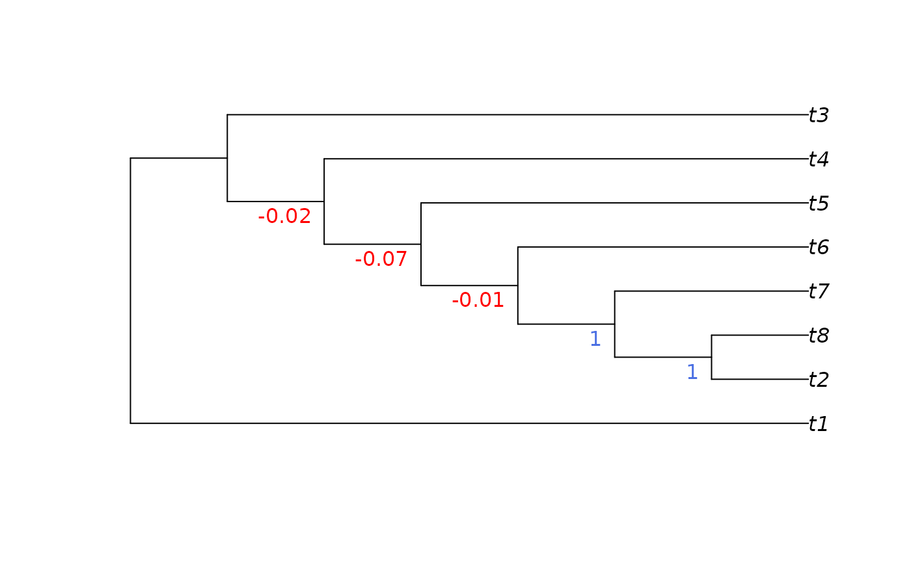

Implements the Groups Present / Contradicted (GC) measure (Goloboff et al. 2003) .
This function was written during a code sprint: its documentation and test cases have not yet been carefully scrutinized, and its implementation may change without notice. Please alert the maintainer to any issues you encounter.
Usage
PresCont(
tree,
forest,
plot = TRUE,
add = FALSE,
adj = 0,
col = NULL,
frame = "none",
pos = 2L,
...
)Arguments
- tree
A tree of class
phylo.- forest
a list of trees of class
phylo, or amultiPhyloobject; or aSplitsobject.- plot
Logical specifying whether to plot results; if
FALSE, returns blank labels for nodes near the root that do not correspond to a unique split.- add
Logical specifying whether to add the labels to an existing plot.
- adj, col, frame, pos, ...
Parameters to pass to
nodelabels().
Value
PresCont() returns a character vector that labels the nodes
in tree in sequence, suitable for passing to nodelabels() or
tree$node.label.
If plot = TRUE, it also plots tree, with splits labelled by their
groups present / contradicted score.
Details
The GC score ranges from -1 to 1, and is intended as an alternative to bootstrap or jackknife support values.
The GC score counts the number of trees in forest that include a given
split, and subtracts the number of times that the most frequent
contradictory split occurs. This value is then divided by the number of
trees in forest.
A score of 1 denotes that every tree in a forest (typically of bootstrap
or jackknife replicates) contains the split in question.
A score of -1 denotes that a specific contradictory split occurs in
every tree in forest.
A score of zero indicates no support: i.e. that the split exhibits no more
support than its most common contradictory split.
The most frequent contradictory split is used to discriminate between a scenario where a given split enjoys much more support than any other alternative (even if many alternatives exist, each with low support), and a scenario where the chosen split is scarcely any better supported than a competing alternative. The split is considered better supported than the latter, where the runner-up may become preferred with a modest change to the underlying dataset.
References
Goloboff PA, Farris JS, Källersjö M, Oxelman B, Ramírez MJ, Szumik CA (2003). “Improvements to Resampling Measures of Group Support.” Cladistics, 19(4), 324–332. doi:10.1016/S0748-3007(03)00060-4 .
See also
SplitFrequency() and MostContradictedFreq() will compute the number
of trees that contain the split, and the frequency of the most contradicted
split, respectively.
Other split support functions:
JackLabels(),
Jackknife(),
MaximizeParsimony(),
MostContradictedFreq(),
SiteConcordance
Examples
library("TreeTools", quietly = TRUE) # for as.phylo
# jackTrees will usually be generated with Jackknife() or Resample(),
# but for simplicity:
jackTrees <- as.phylo(1:100, 8)
tree <- as.phylo(0, 8)
PresCont(tree, jackTrees)

#> 11 12 13 14 15
#> -0.02 -0.07 -0.01 1.00 1.00
tree$node.label <- PresCont(tree, jackTrees, plot = FALSE)
# Write the labelled tree to screen
ape::write.tree(tree)
#> [1] "(t1,((((((t2,t8)1,t7)1,t6)-0.01,t5)-0.07,t4)-0.02,t3));"
# Write labelled trees to a nexus file:
# write.nexus(tree, file = filename)
# Compute the measure for further analysis
gpc <- (SplitFrequency(tree, jackTrees) -
MostContradictedFreq(tree, jackTrees)) / length(jackTrees)
gpc
#> 11 12 13 14 15
#> -0.02 -0.07 -0.01 1.00 1.00